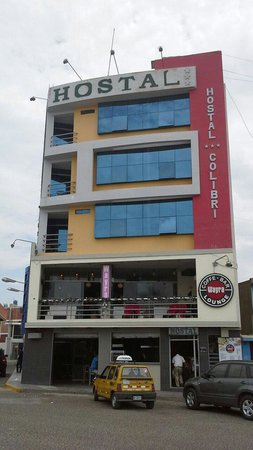
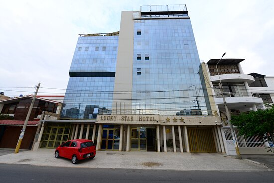
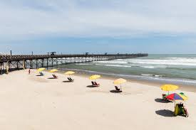

Chiclayo, conocida como la Capital de la Amistad, es una ciudad que recibe a visitantes por turismo, negocios y actividades culturales durante todo el año. Para atender esta demanda, la ciudad ofrece una variada oferta hotelera que se adapta a diferentes presupuestos y necesidades.

Los hoteles en Chiclayo incluyen desde opciones económicas hasta establecimientos de mayor categoría. Muchos de ellos se encuentran ubicados en zonas céntricas, cerca de avenidas principales, centros comerciales y restaurantes, lo que facilita el desplazamiento de los visitantes.
Las habitaciones suelen ofrecer ambientes cómodos y limpios, pensados para garantizar el descanso del huésped. Entre los servicios más comunes se encuentran conexión a internet, televisión por cable, aire acondicionado y servicio de limpieza diaria.

Muchos hoteles cuentan con áreas comunes como lobby, cafetería o restaurante, donde los visitantes pueden relajarse o disfrutar de la gastronomía local sin salir del establecimiento.
Para los turistas, Chiclayo es un punto estratégico para visitar importantes atractivos culturales y arqueológicos como el Museo Tumbas Reales de Sipán y otros sitios de la región Lambayeque. Algunos hoteles brindan información turística o apoyo para organizar visitas.
Los viajeros de negocios también encuentran opciones adecuadas, con espacios tranquilos, buena conectividad y servicios que permiten trabajar con comodidad durante la estadía. En general, los hoteles de Chiclayo destacan por su hospitalidad, ubicación estratégica y variedad de servicios, convirtiéndose en una excelente alternativa para quienes buscan una estadía cómoda y agradable en el norte del Perú.